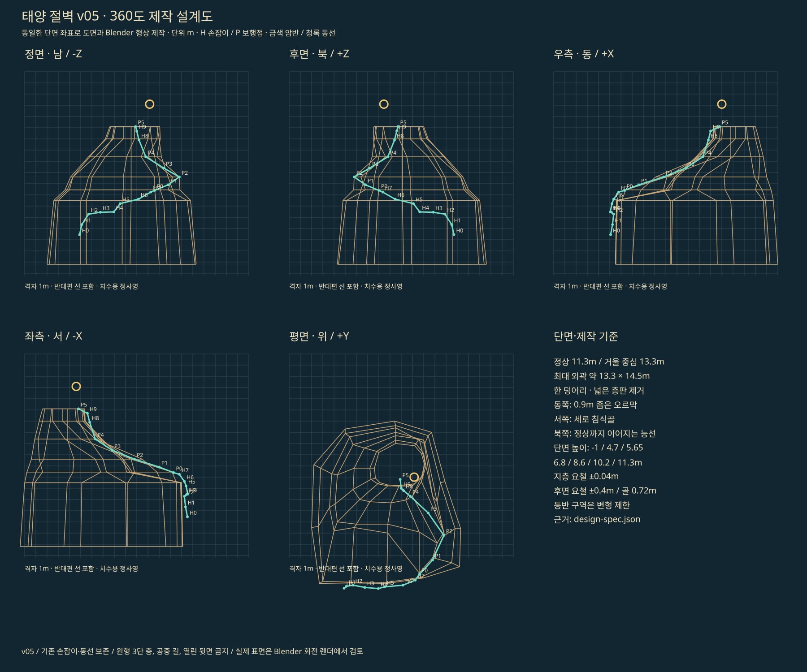

태양 절벽 · 360° 제작 검토
v05 / 설계 단면 → Blender 제작 → 같은 모델의 방향별 렌더. 아래 이미지는 실제 Blender 렌더이며 게임 화면은 별도입니다.

여섯 방향 정사영


형상과 동선 제작 도면
금색 선은 높이별 암반 단면, 청록 선은 기존 손잡이·보행 동선입니다. 반대편 단면도 함께 표시되어 있습니다.

v05 / 설계 단면 → Blender 제작 → 같은 모델의 방향별 렌더. 아래 이미지는 실제 Blender 렌더이며 게임 화면은 별도입니다.
금색 선은 높이별 암반 단면, 청록 선은 기존 손잡이·보행 동선입니다. 반대편 단면도 함께 표시되어 있습니다.
